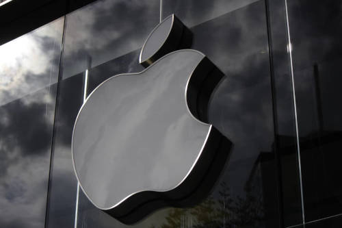
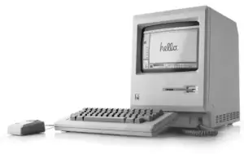

Início de tudo
A história da Apple começou em 1976, quando Steve Jobs🔗 , Steve Wozniak e Ronald Wayne fundaram a Apple Computer Company na garagem da casa dos pais de Jobs, em Cupertino, Califórnia. Os três amigos, que eram colegas de escola, tinham o sonho de criar computadores pessoais mais pequenos e acessíveis
O primeiro produto da empresa foi o Apple I, que foi demonstrado em 1975 no Homebrew Computer Club e começou a ser vendido em julho de 1976 por 666,66 dólares. Embora o Apple I apresentasse uma tecnologia avançada para a época, não foi bem-sucedido e foi rejeitado por grandes empresas do setor, como a Hewlett-Packard (HP).

No entanto, os três sócios continuaram a aperfeiçoar o produto e, em 1977, lançaram o Apple II, que foi bem-aceito pelo mercado.
Macintosh
O Macintosh foi o segundo grande sucesso da empresa. Lançado em 24 de janeiro de 1984, esse computador foi criado para que a Apple pudesse disputar com a IBM, que dominava o mercado. Esse computador possuía uma tecnologia bem avançada para a época, com uma capacidade de memória RAM maior do que a de muitas máquinas dos concorrentes. Mas certamente um dos principais fatores que fez com que esse produto seja lembrado até hoje foi a icônica apresentação que Jobs fez. Em um palco escuro, Steve Jobs retirou o Macintosh de uma bolsa, ligou o computador e apresentou diversas funcionalidades do aparelho. No final, a máquina transmitiu o seguinte áudio: “Olá, eu sou o Macintosh! Com certeza é ótimo sair dessa bolsa.”
iPhone: o maior sucesso
O iPhone é certamente o produto mais conhecido da Apple e também é o aparelho responsável por transformar o mercado de celulares. Tudo isso porque ele reuniu, em um só local, diversas tecnologias já existentes na época do seu lançamento. Esse produto, um grande marco da história da Apple, foi apresentado ao público no dia 9 de janeiro de 2007, mas só começou a ser comercializado no dia 29 de junho. Em apenas dois meses e meio, a empresa da maçã atingiu a marca de 1 milhão de iPhones vendidos. Com o lançamento do iPhone, a Apple deixou de ser apenas uma fabricante de computadores e passou a ser uma empresa de tecnologia de consumo.